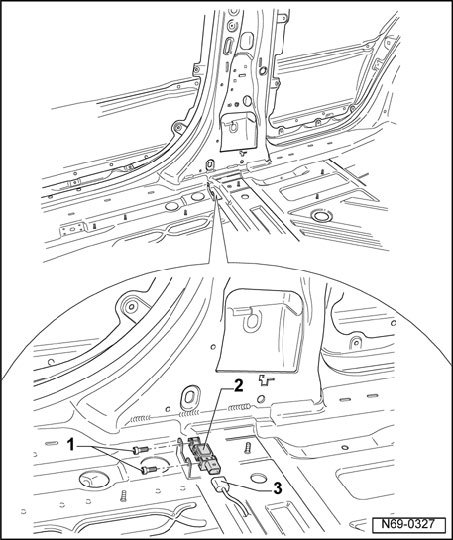

Side Airbag Crash Sensors, Removing and Installing
Side Airbag Crash Sensors, Removing And Installing
Removing
NOTE: Removal and installation is described for the right-hand side of the vehicle. Removal and installation for the left-hand side is performed in the same manner.
CAUTION: Observe safety precautions for working on airbags.
- Remove belt anchor.
- Remove front seat:
- Remove 12-way seat.
- Remove seat base.
- Remove floor covering in area of side crash sensors.
- Remove the two bolts -1- (9 Nm).

- Separate wiring harness -3- from crash sensor -2-.

Installing
- Installation is performed in the reverse order of removal.
- Turn on ignition.
CAUTION: Make sure that no persons are in the vehicle.
- Connect battery ground (GND) strap.